Еврейский уличный фестиваль
Еврейский уличный фестиваль — главное событие лета IKG.Kultur. Мы отмечаем разнообразие еврейской жизни.
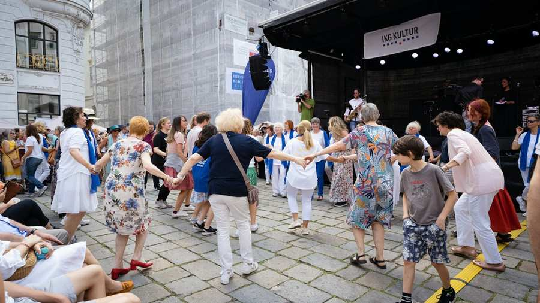
Следующий еврейский уличный фестиваль состоится в июне 2027 года.
Еврейский уличный фестиваль
Еврейский уличный фестиваль проводится ежегодно в воскресенье июня. Вход бесплатный, но для входа необходимо удостоверение личности с фотографией.
Если вы хотите узнать больше о еврейской жизни, не пропустите еврейский уличный фестиваль. Фестиваль уже много лет проходит в июне на Юденплац в Вене. Ежегодно это мероприятие посещают более 6000 посетителей. Помимо многочисленных информационных и торговых стендов о еврейской жизни, помимо нашей сценической программы с музыкой и танцами, есть также предложения для детей, такие как надувной замок и аквагрим. Разумеется, предусмотрена и кошерная кухня.
Стенды
Десятки еврейских ассоциаций и учреждений знакомят со своей работой на фестивальных стендах. К ним относятся молодежные и благотворительные клубы, стенды отдельных отделов Israelitische Kultusgemeinde Wien (Еврейская община Вены) и многие другие. Кроме того, многочисленные еврейские художники и дизайнеры выставляют свои предметы искусства, в том числе изделия ручной работы, ювелирные изделия, иудаику, поп-арт и многое другое – при желании их, конечно, можно приобрести.
Кулинарный
О вашем физическом благополучии позаботятся. От пикантного до сладкого: откройте для себя кошерную кухню!
программа
Шоу, живая музыка, детские программы и еврейские народные танцы.
Обзор
Фотогалерея
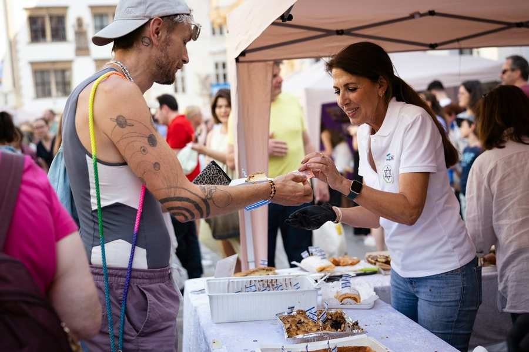
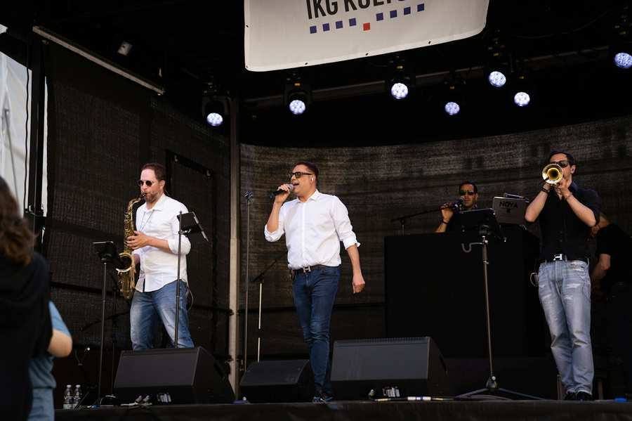
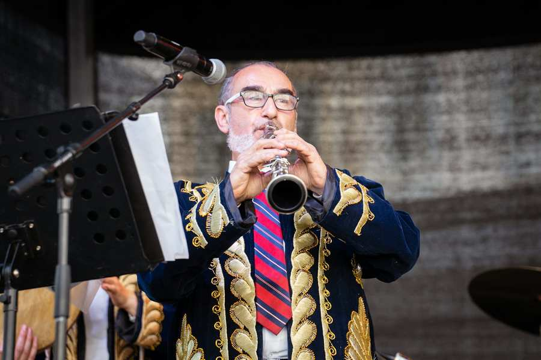
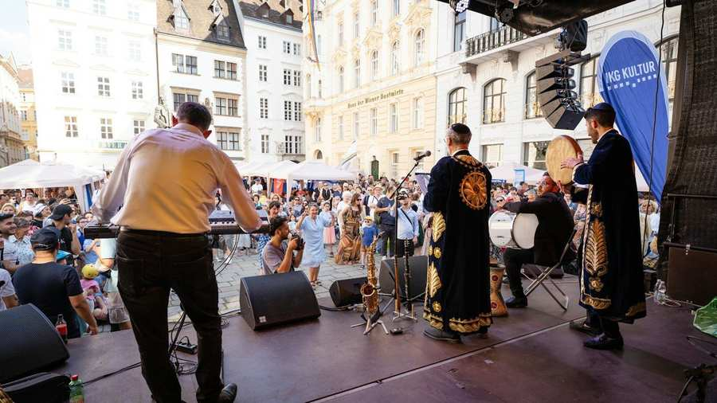
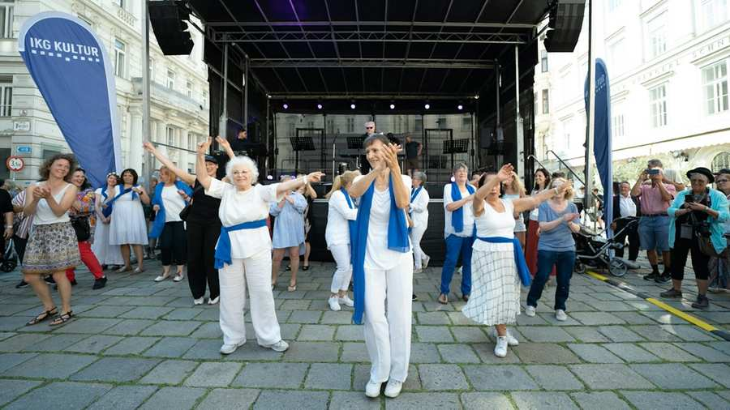
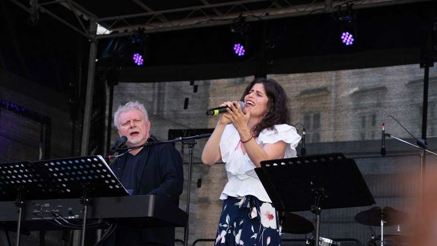
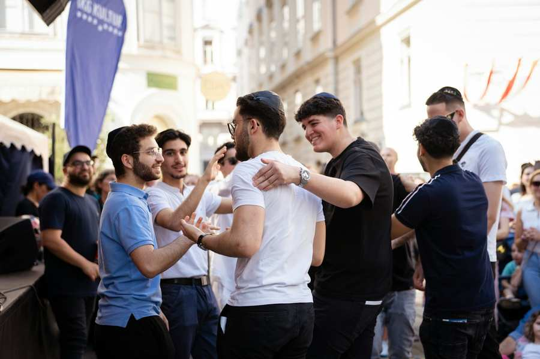
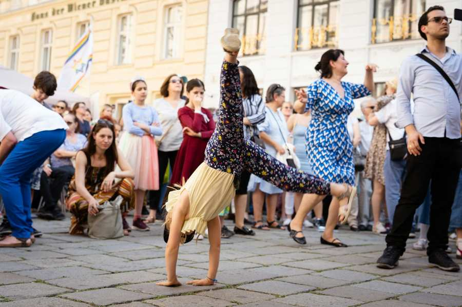

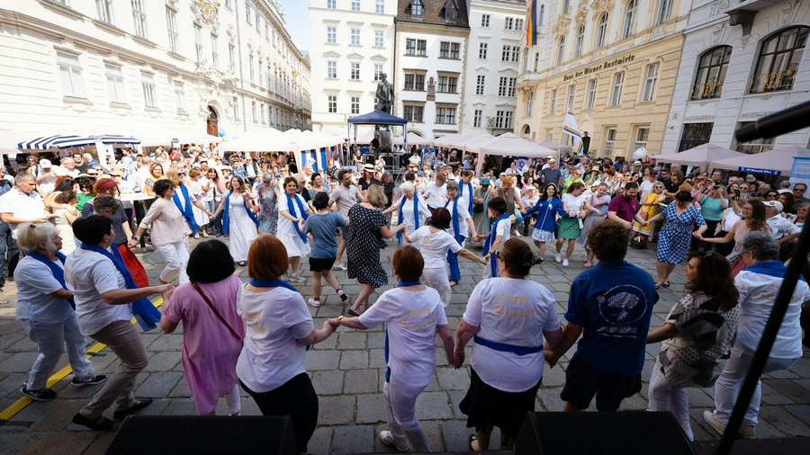

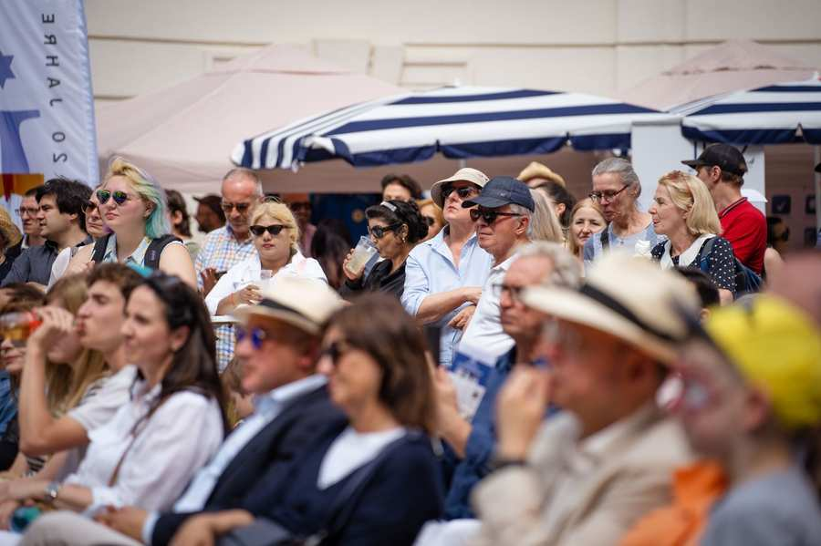
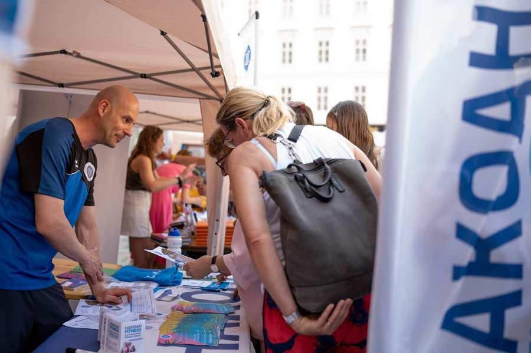


Фото: IKG/Кристин Шмидл